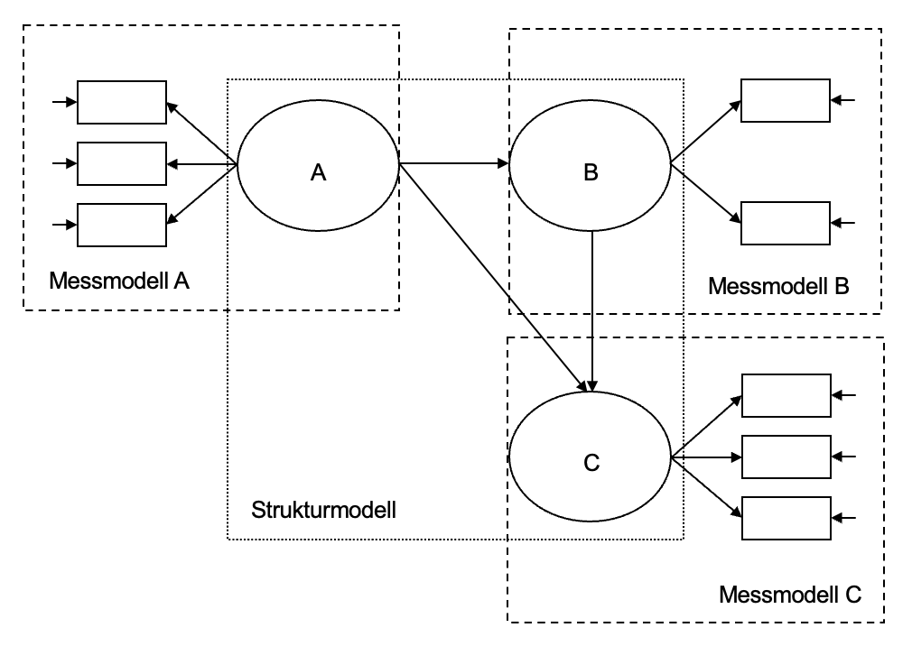

Kapitel 1 Strukturgleichungsmodelle
Strukturgleichungsmodelle (engl. Structural Equation Models, SEM) dienen dazu, komplexe Beziehungen zwischen Variablen zu modellieren und zu überprüfen. Dabei werden sowohl direkte als auch indirekte Zusammenhänge zwischen manifesten (beobachtbaren) und latenten Variablen untersucht. SEM kombinieren die konfirmatorischer Faktorenanalyse mit der Pfadanalyse, um pfadanalytische Strukturen auf der Ebene latenter, von Messfehlern bereinigter Variablen zu untersuchen.
Ein Hauptziel von SEM besteht darin, theoretische Modelle zu überprüfen und zu testen, wie gut diese mit den (direkt) beobachteten Daten übereinstimmen. Diese Methode ermöglicht es, Hypothesen über die Beziehungen zwischen Variablen explizit zu formulieren und sie anhand der Daten zu validieren.
In einem linearen Strukturgleichungsmodell unterscheidet man zwei Teilmodelle:
Das Messmodell, das die Beziehungen zwischen den beobachteten Variablen (Indikatoren) und den latenten Variablen spezifiziert. Es beschreibt, wie die latenten Variablen durch ihre Indikatoren gemessen werden. Um den Messfehler von wahren interindividuellen Unterschieden zu trennen, sind mindestens zwei Indikatoren pro Konstrukt (latenter Variable) erforderlich.
Das Strukturmodell, das die Beziehungen zwischen latenten Variablen in Form eines Pfadmodells darstellt.

1.1 Grundlegendes
Latente und manifeste Variablen: Latente Variablen sind nicht direkt messbare Konstrukte, die durch manifeste Variablen (Indikatoren) erfasst werden. SEM ermöglichten die Untersuchung kausaler Zusammenhänge zwischen diesen Variablen.
Modellpassung: Ein wesentliches Ziel von SEM ist es, zu prüfen, wie gut das vorgeschlagene Modell mit den beobachteten Daten übereinstimmt. Dies erfolgt anhand verschiedener Fit-Indizes, die anzeigen, wie stark die Hypothesen durch die Daten gestützt werden.
1.2 Beispiel zur Anwendung eines SEM
Um die Anwendung eines SEMs zu verdeutlichen, betrachten wir den PoliticalDemocracy-Datensatz aus dem lavaan-Paket (Bollen, 1989). Der Datensatz enthält Informationen zu politischen und wirtschaftlichen Indikatoren in verschiedenen Ländern. Die zentralen Variablen beziehen sich auf die Demokratie und die industrielle Entwicklung im Zeitraum von 1969 bis 1965.
In diesem Beispiel untersuchen wir die Beziehungen zwischen der industriellen Entwicklung und der Demokratie. Die latenten Variablen, die in diesem Modell spezifiziert werden sollen, sind Demokratie im Jahr 1969 (dem60), Demokratie im Jahr 1965 (dem65) und Industrielle Entwicklung im Jahr 1969 (ind60). Diese werden durch manifeste Indikatoren gemessen:
- dem60 wird durch die Indikatoren y1, y2, y3 und y4 repräsentiert.
- dem65 wird durch die Indikatoren y5, y6, y7 und y8 repräsentiert.
- ind60 wird durch die Indikatoren x1, x2 und x3 repräsentiert.
Ziel der Strukturgleichungsmodellierung ist es, theoretisch fundierte Hypothesen zu testen. Im vorliegenden Beispiel gehen wir davon aus, dass die industrielle Entwicklung im Jahr 1960 (ind60) sowohl die Demokratie im Jahr 1960 (dem60) als auch die Demokratie im Jahr 1965 (dem65) beinflusst. Zudem wird angenommen, dass die Demokratie im Jahr 1960 (dem60) einen Einfluss auf die Demokratie im Jahr 1965 (dem65) hat.
1.2.2 Prüfung der Anwendungsvoraussetzungen
Bevor ein SEM berechnet bzw. aufgestellt wird, sollten die Daten auf ihre Eignung geprüft werden. Zu den wichtigsten Voraussetzungen zählen:
Lineare Zusammenhänge: Eine Grundannahme linearer SEM ist es, dass die Beziehungen zwischen den latenten Variablen und den beobachteten Indikatoren linear sind. Lineare Zusammenhänge bedeuten, dass Veränderungen in einer Variablen mit proportionalen Veränderungen in einer anderen Variablen einhergehen. In einem SEM-Kontext wird davon ausgegangen, dass die latenten Variablen durch die beobachteten Variablen auf lineare Weise erklärt werden.
Zahl der Beobachtungen: Eine ausreichende Stichprobengröße ist eine grundlegende Voraussetzung für die Durchführung von SEM. Laut Schönbrodt und Perugini (2013) stabilisieren sich Korrelationen bei einer Stichprobengröße von etwa 250 Personen. Dies wird als eine Mindestanforderung betrachtet, um stabile und verlässliche Schätzungen der Parameter zu erhalten. Zusätzlich zu stabilen Korrelationen gilt die Faustregel, dass die Anzahl der Beobachtungen die Anzahl der Modellparameter deutlich übersteigen sollte. Eine häufig genutzte Regel ist, dass pro Variable mindestens 5 bis 10 Beobachtungen vorliegen sollten, um stabile Schätzungen zu erhalten.
# Scatterplots zur Überprüfung der Linearität der Indikatoren eines Konstrukts
pairs(PoliticalDemocracy[, 1:4]) # dem60


## [1] 75Die Ergebnisse zeigen, dass die Annahme der Linearität zwischen den manifesten Indikatoren eines jeden Konstrukts erfüllt ist. Es sind keine U- oder umgedreht U-förmigen Zusammenhänge erkennbar, was auf lineare Beziehungen zwischen den Indikatoren hinweist. Zudem erscheint die Stichprobengröße mit 75 Beobachtungen für die Anzahl der Variablen (11 Indikatoren) ausreichend, um stabile Schätzungen im Strukturgleichungsmodell zu erhalten.
1.2.3 Spezifizierung des Modells
Nachdem die Anwendungsvoraussetzungen geprüft wurden, spezifizieren wir nun das SEM. Wie bereits im Zuge der theoretischen Einführung beschrieben, besteht das Modell aus zwei Hauptkomponenten: dem Messmodell, welches die Beziehungen zwischen den latenten Variablen und ihren manifesten Indikatoren beschreibt, und dem Strukturmodell, welches die Beziehungen zwischen den latenten Variablen selbst definiert.
Hinweis: In SEM können die Residuen (Fehlerterme) zwischen den Indikatoren miteinander korrelieren. Das bedeutet, dass es neben dem Einfluss der latenten Variablen möglicherweise noch andere gemeinsame Ursachen oder Einflüsse gibt, die zu Ähnlichkeiten in den beobachteten Variablen führen. Solche Korrelationen zwischen den Fehlertermen können spezifiziert werden, um diesen zusätzlichen Zusammenhang im Modell zu berücksichtigen.
In unserem Beispiel wird angenommen, dass bestimmte Indikatoren innerhalb des Konstrukts Demokratie (sowohl für 1960 als auch 1965) ähnliche, nicht durch das Modell erklärte Einflüsse teilen, weshalb Residualkorrelationen (d.h. Beziehungen zwischen den Fehlertermen) in das Modell integriert werden sollen.
model <- '
# Messmodell
ind60 =~ x1 + x2 + x3
dem60 =~ y1 + y2 + y3 + y4
dem65 =~ y5 + y6 + y7 + y8
# Regression
dem60 ~ ind60
dem65 ~ ind60 + dem60
# Residualkorrelationen
y1 ~~ y5
y2 ~~ y4 + y6
y3 ~~ y7
y4 ~~ y8
y6 ~~ y8
'In diesem Beispiel verwenden wir drei unterschiedliche Formeltypen: Definition latenter Variablen (mit dem Operator =~), Regressionsformeln (mit dem Operator ~) und (Ko-)Varianzformeln (mit dem Operator ~~).
1.2.4 Model-Fitten
Nachdem das SEM spezifiziert wurde, kann nun das Modell an die Daten angepasst werden. Das Model-Fitten beschreibt den Prozess, bei dem die Modellparameter so geschätzt werden, dass die Unterschiede zwischen den thereotisch erwarteten und den tatsächlich beobachteten Werten minimiert werden. Dabei wird in der Regel die Maximum-Likelihood-Methode (ML) verwendet, um die besten Schätzungen für die Parameter zu erhalten.
Um das Modell umfassend zu analysieren, verwenden wir in der Zusammensetzung zusätzlich zu den standardisierten Koeffizienten auch die Fit-Indizes und die R-Quadrat-Werte, um die Modellpassung und Erklärungsleistung zu beurteilen.
fit = sem(model, data = PoliticalDemocracy)
summary(fit, fit.measures = TRUE, standardized = TRUE, rsquare = TRUE)## lavaan 0.6-18 ended normally after 68 iterations
##
## Estimator ML
## Optimization method NLMINB
## Number of model parameters 31
##
## Number of observations 75
##
## Model Test User Model:
##
## Test statistic 38.125
## Degrees of freedom 35
## P-value (Chi-square) 0.329
##
## Model Test Baseline Model:
##
## Test statistic 730.654
## Degrees of freedom 55
## P-value 0.000
##
## User Model versus Baseline Model:
##
## Comparative Fit Index (CFI) 0.995
## Tucker-Lewis Index (TLI) 0.993
##
## Loglikelihood and Information Criteria:
##
## Loglikelihood user model (H0) -1547.791
## Loglikelihood unrestricted model (H1) -1528.728
##
## Akaike (AIC) 3157.582
## Bayesian (BIC) 3229.424
## Sample-size adjusted Bayesian (SABIC) 3131.720
##
## Root Mean Square Error of Approximation:
##
## RMSEA 0.035
## 90 Percent confidence interval - lower 0.000
## 90 Percent confidence interval - upper 0.092
## P-value H_0: RMSEA <= 0.050 0.611
## P-value H_0: RMSEA >= 0.080 0.114
##
## Standardized Root Mean Square Residual:
##
## SRMR 0.044
##
## Parameter Estimates:
##
## Standard errors Standard
## Information Expected
## Information saturated (h1) model Structured
##
## Latent Variables:
## Estimate Std.Err z-value P(>|z|) Std.lv Std.all
## ind60 =~
## x1 1.000 0.670 0.920
## x2 2.180 0.139 15.742 0.000 1.460 0.973
## x3 1.819 0.152 11.967 0.000 1.218 0.872
## dem60 =~
## y1 1.000 2.223 0.850
## y2 1.257 0.182 6.889 0.000 2.794 0.717
## y3 1.058 0.151 6.987 0.000 2.351 0.722
## y4 1.265 0.145 8.722 0.000 2.812 0.846
## dem65 =~
## y5 1.000 2.103 0.808
## y6 1.186 0.169 7.024 0.000 2.493 0.746
## y7 1.280 0.160 8.002 0.000 2.691 0.824
## y8 1.266 0.158 8.007 0.000 2.662 0.828
##
## Regressions:
## Estimate Std.Err z-value P(>|z|) Std.lv Std.all
## dem60 ~
## ind60 1.483 0.399 3.715 0.000 0.447 0.447
## dem65 ~
## ind60 0.572 0.221 2.586 0.010 0.182 0.182
## dem60 0.837 0.098 8.514 0.000 0.885 0.885
##
## Covariances:
## Estimate Std.Err z-value P(>|z|) Std.lv Std.all
## .y1 ~~
## .y5 0.624 0.358 1.741 0.082 0.624 0.296
## .y2 ~~
## .y4 1.313 0.702 1.871 0.061 1.313 0.273
## .y6 2.153 0.734 2.934 0.003 2.153 0.356
## .y3 ~~
## .y7 0.795 0.608 1.308 0.191 0.795 0.191
## .y4 ~~
## .y8 0.348 0.442 0.787 0.431 0.348 0.109
## .y6 ~~
## .y8 1.356 0.568 2.386 0.017 1.356 0.338
##
## Variances:
## Estimate Std.Err z-value P(>|z|) Std.lv Std.all
## .x1 0.082 0.019 4.184 0.000 0.082 0.154
## .x2 0.120 0.070 1.718 0.086 0.120 0.053
## .x3 0.467 0.090 5.177 0.000 0.467 0.239
## .y1 1.891 0.444 4.256 0.000 1.891 0.277
## .y2 7.373 1.374 5.366 0.000 7.373 0.486
## .y3 5.067 0.952 5.324 0.000 5.067 0.478
## .y4 3.148 0.739 4.261 0.000 3.148 0.285
## .y5 2.351 0.480 4.895 0.000 2.351 0.347
## .y6 4.954 0.914 5.419 0.000 4.954 0.443
## .y7 3.431 0.713 4.814 0.000 3.431 0.322
## .y8 3.254 0.695 4.685 0.000 3.254 0.315
## ind60 0.448 0.087 5.173 0.000 1.000 1.000
## .dem60 3.956 0.921 4.295 0.000 0.800 0.800
## .dem65 0.172 0.215 0.803 0.422 0.039 0.039
##
## R-Square:
## Estimate
## x1 0.846
## x2 0.947
## x3 0.761
## y1 0.723
## y2 0.514
## y3 0.522
## y4 0.715
## y5 0.653
## y6 0.557
## y7 0.678
## y8 0.685
## dem60 0.200
## dem65 0.9611.2.5 Interpretation der SEM-Ergebnisse
1.2.5.1 Modell-Fit
Der Chi-Quadrat-Wert ist nicht signifikant (χ²(35) = 38.125, p = .329), was darauf hinweist, dass das Modell die Datn gut repräsentiert (Nullhypothese des Tests: Es gibt keinen Unterschied zwischen dem theoretischen Modell und den beobachteten Daten, daher ist ein n.s. Ergebnis hier erwünscht). Auch die Fit-Indizes zeigen eine gute Passung.
Die Fit-Indizes bestätigen die Angemessenheit des Modells:
- Root Mean Suqare Error of Approximation (RMSEA): Der RMSEA misst unter Berücksichtigung der Modellkomplexität (Anzahl der Freiheitsgrade), wie gut das Modell zu den Daten passt. Er zeigt an, wie stark das Modell pro Freiheitsgrad von einer perfekten Passung abweicht. Werte unter 0.05 zeigen eine sehr gute Modellpassung an, Werte zwischen 0.05 und 0.10 gelten als akzeptabel bis mäßig.
Der RMSEA beträgt 0.035, was auf eine sehr gute Modellpassung hinweist. Auch das 90%-Konfidenzintervall zeigt, dass der RMSEA innerhalb des akzeptablen Bereichs liegt. Das Modell bildet die Daten damit unter Berücksichtigung der Freiheitsgrade sehr gut ab.
- Standardized Root Mean Square Residual (SRMR): Der SRMR misst die Differenz zwischen den beobachteten Korrelationen und den durch das Modell vorhergesagten Korrelationen. Er gibt einen standardisierten wert für die Differenz zwischen den Residuen des Modells und den Daten. Werte unter 0.08 zeigen eine gute Modellpassung an, Werte über 0.10 gelten als schlecht.
Der SRMR beträgt 0.044, was deutlich unter der kritischen Schwelle von 0.08 liegt und ebenfalls auf eine gute Modellpassung hinweist. Die geringen Residuen zeigen, dass das Modell die beobachteten Korrelationen gut abbildet.
1.2.5.2 Parameter-Interpretation
Die Parameter des Modells sind durchweg signifikant, was darauf hindeutet, dass die Beziehungen zwischen den Variablen gut modelliert sind:
Latente Variablen und ihre Indikatoren: ind60, dem60 und dem65 werden durchwegs signifikant durch die Indikatoren (x1, x2 und x3 bzw. y1, y2, y3 und y4 bzw. y5, y6, y7 und y8) gemessen.
Regressionsbeziehungen: dem60 wird signifikant durch ind60 beeinflusst (\(\beta\) = 0.45, p < .001). dem65 wird sowohl durch ind60 (\(\beta\) = 0.18, p = .010) als auch dem60 (\(\beta\) = 0.89, p < .001) vorhergesagt. Die industrielle Entwicklung hängt demnach signifikant mit der Demokratie im Jahr 1960 zusammen. Die industrielle Entwicklung ist zudem, gemeinsam mit der Demokratie im Jahre 1960, ein wichtiger Prädiktor der Demokratie im Jahr 1965.
1.2.5.3 Erklärte Varianz
Die R-Quadrat-Werte zeigen, wie gut die Indikatoren die latenten Variablen erklären: So erklären die Indikatoren x1, x2 und x3 jeweils 84.6%, 94.7% und 76.1% der Varianz von ind60, was auf eine starke Erklärungsleistung hinweist. Für die latenten Variablen dem60 und dem65 sind die R-Quadrat-Werte ebenfalls aufschlussreich: dem60 wird zu 20% durch ind60 erklärt. dem65 wid zu 96.1% durch ind60 und dem60 erklärt, was auf eine sehr starke Erklärungsleistung des Modells hinweist.